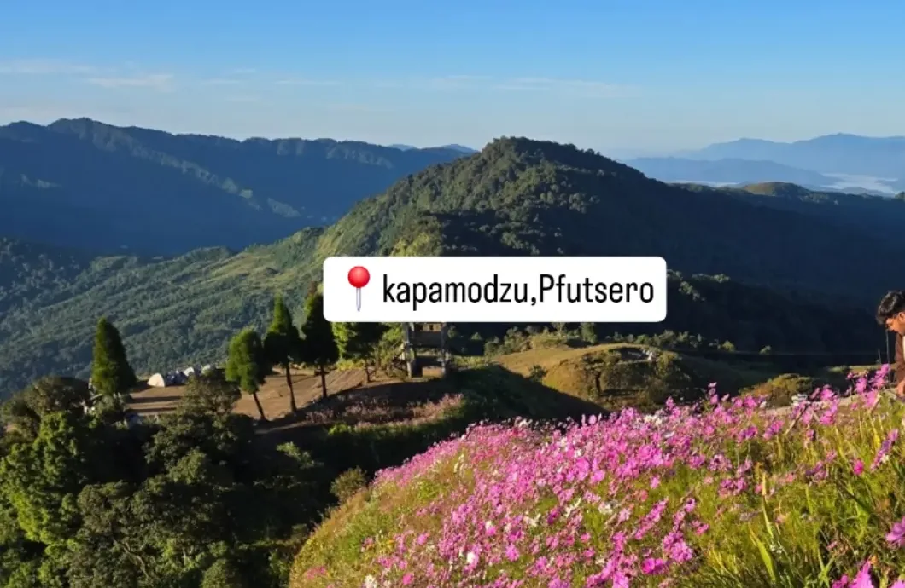
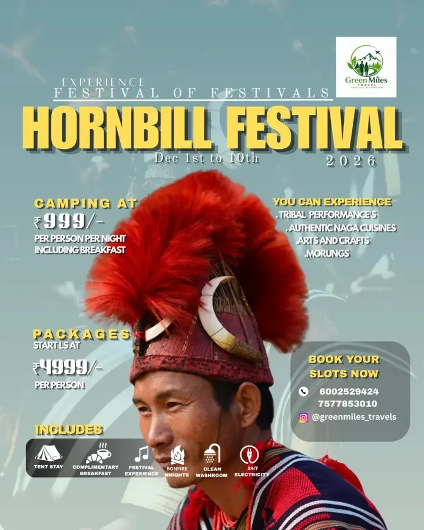
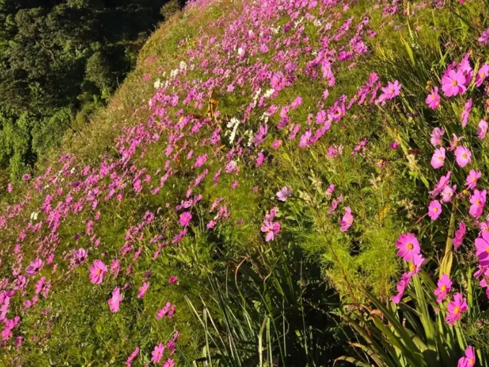
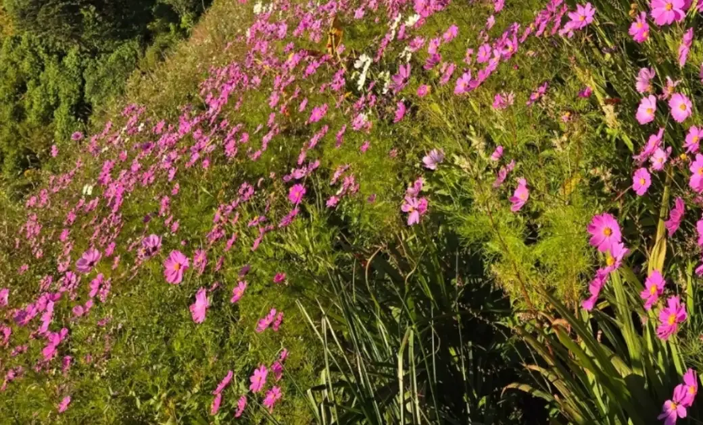
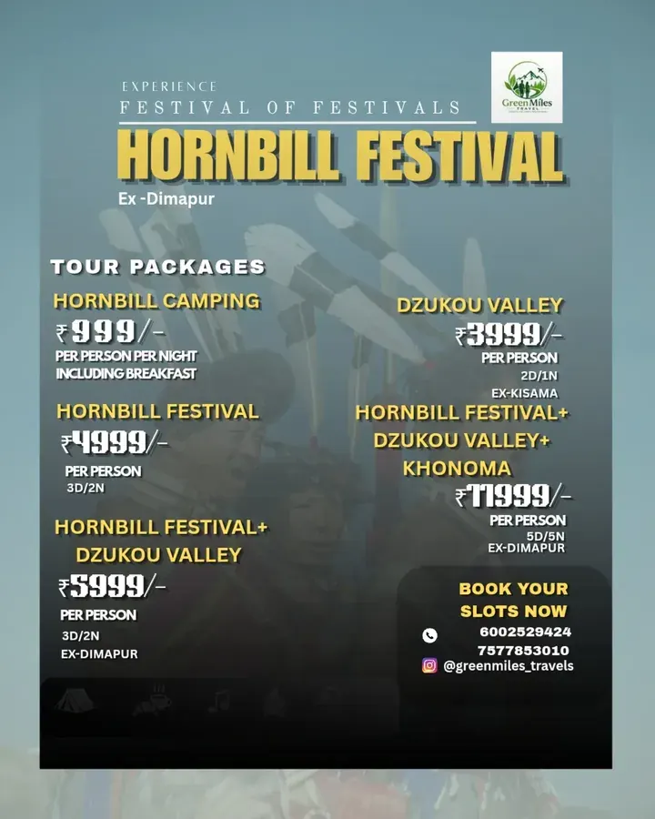
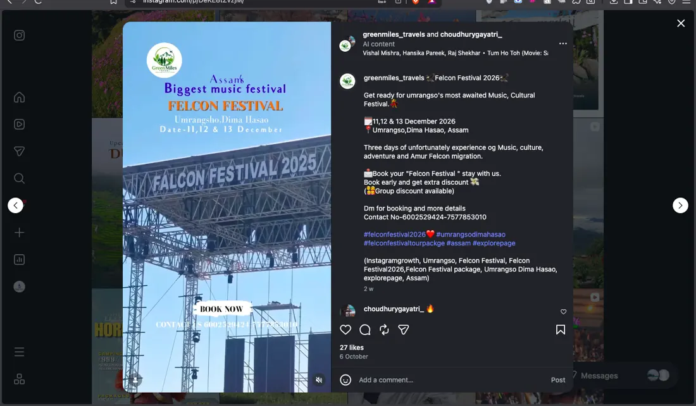

Local at heart
Trips shaped around the places, people and stories of the North-East.
Treks, village stays and guided trips at prices that stay honest.
Start exploring↗Big mountains or small village paths. Find your reason to go.

01TreksWalk into the wild↗
02Villages & CultureMeet the communities↗
03NatureRoom to breathe↗
04Weekend GetawaysGo this weekend↗
05Budget TripsMore miles, less spend↗
06AdventureThe good kind of unknown↗Trips shaped around the places, people and stories of the North-East.
Hills, trails, villages and quieter places. That’s our kind of travel.
Clear starting prices and trip details before you commit.
Less rushing through. More memories that stay with you.
Festival performances, food and heritage at Kisama.
Hike through the green folds of Nagaland.
Walk the wildflower ridges near Kapamodzu.
Ridges, wildflowers and wide-open views.
A valley of rolling hills and quiet trails.
Experience the Hornbill Festival.
We're collecting our travelers' stories with their permission.
Some places are better experienced on foot. Tell us where you're dreaming of going.
Begin your journey↗